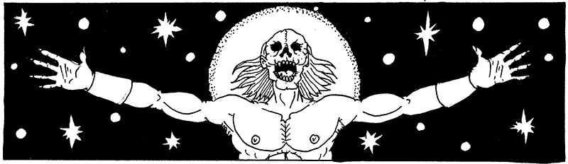
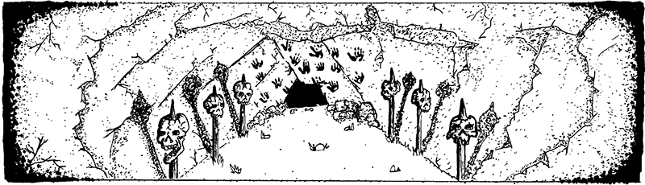

Mordite Press Presents
Torchbearer Sagas:
The Crypt of Khabb’r
A Torchbearer adventure for 3-5 players of 1st-3rd levels

High in the steppes of Barbaria, the epics tell of Khaab’r, a brave and fearsome wanderer who rose to become King of his tribe. His dagger, Tiger’s Tooth, was his constant companion throughout his legendary exploits. During his daring moonlight raid of High Hollow, it was Tiger’s Tooth that silenced the lookouts. When he was captured by the army of Sanction, it was Tiger’s Tooth that cut the rope binding his wrists. Throughout the rest of his life, Tiger’s Tooth was there, hanging at his hip or gripped in his fist—a symbol of his strength and cunning. When Khaab’r died, Tiger’s Tooth was placed in his crypt to serve him in the afterlife.
Centuries have passed. Khaab’r’s tribe has settled down, building a town on the shores of the great Khor’aat lake. Now foreigners arrive daily in Shaa Khor’aat—merchants and mercenaries alike—seeking their fortunes in this once remote trading post.
Ka’mara, the elderly King of the Khor’aat tribe and descendant of Khaab’r himself, has sent out a call to all willing adventurers in the town: retrieve Tiger’s Tooth and bring it to him, so that it may aid him as it did his storied ancestor. The locals believe Khaab’r’s tomb is cursed, and they fear the goblins that reside in the Canyon of Spirits. But outsiders, handy with wit and steel, may be right for the job.
